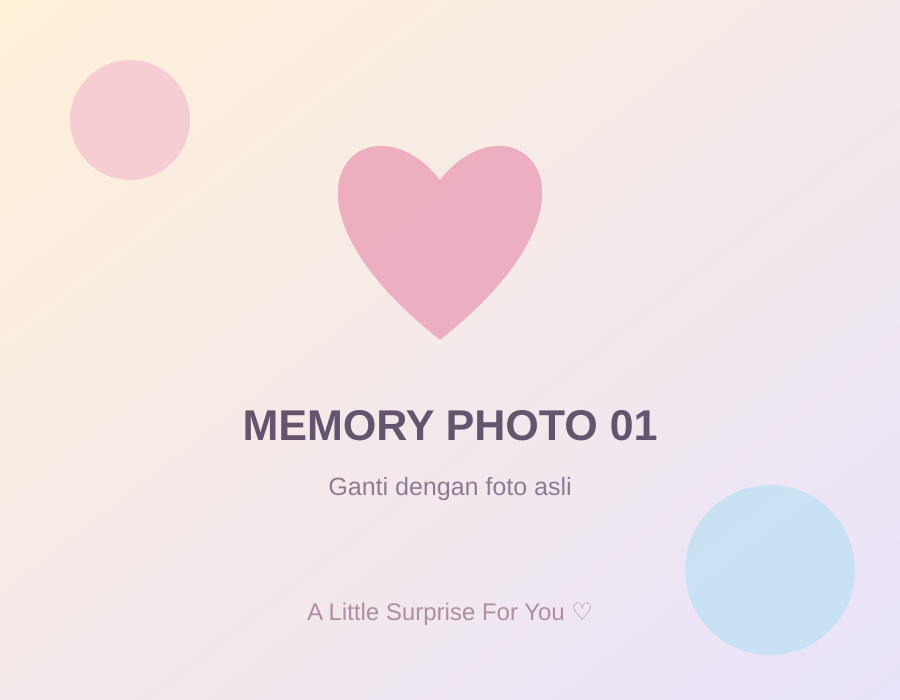

a little letter ♡
With lots of good wishes, ♡
psst... just for you
A little page, a little surprise, and a whole lot of good wishes. Are you curious?
made with a little extra thought ✿
today is all about you
a collection of little moments
Beberapa kenangan terlalu berharga untuk dilupakan. Ini sebagian cerita yang layak disimpan. ♡

A little moment to remember ♡
a little appreciation journal
Setiap langkah, usaha, dan keputusan berani pantas mendapat apresiasi. ♡
a special chapter of my journey
Some experiences may only happen once, but the memories will always have their own place.
By the way, ada satu cerita yang ingin aku abadikan di bagian ini. Pelopor menjadi salah satu chapter spesial dalam perjalananku. Bukan hanya tentang pengalaman tampil, tetapi juga tentang proses, keberanian, dan seseorang yang ikut menjadi bagian dari cerita ini.
Saat semifinal, aku memilih monolog dari naskah Sudah Gila karya Reza Anwar. Sebuah monolog tentang seorang suami yang merindukan istrinya yang telah tiada. Untuk mendukung penampilan tersebut, aku membutuhkan sebuah foto perempuan sebagai properti.
Malam sebelum tampil, sekitar pukul sembilan, aku masih kebingungan mencari foto yang cocok. Sampai akhirnya aku terpikir untuk meminta bantuan Jessica. Awalnya aku sempat ragu, takut kalau dia tidak berkenan. Namun, ternyata dia bersedia memberikan fotonya. Malam itu hujan turun sangat deras, dan aku harus menunggu sampai hujan sedikit reda sebelum mencari tempat untuk mencetak foto tersebut. Setelah berkeliling, akhirnya foto itu berhasil aku cetak dan masukkan ke dalam bingkai.
Hari penampilan pun tiba. Jujur, aku benar-benar gugup. Tiga nomor sebelum giliranku tampil, kakiku mulai gemetar, tanganku ikut bergetar, bahkan perutku terasa sakit karena terlalu tegang. Saat itu, aku masih bisa menggunakan HP, jadi aku terus bercerita kepada Jessica melalui chat. Aku bilang kalau aku sangat gugup, takut tidak bisa memberikan penampilan terbaik, dan berharap semuanya berjalan lancar.
Beberapa nomor kemudian, akhirnya aku maju ke depan panggung. Alhamdulillah, semuanya bisa aku lewati. Setelah selesai tampil, ada rasa lega dan bahagia yang sulit dijelaskan. Aku juga membawa foto Jessica ketika berfoto setelah penampilan. Awalnya sempat tidak diperbolehkan, tetapi aku tetap berusaha agar foto itu bisa ikut menjadi bagian dari momen tersebut.
Bagiku, foto itu bukan sekadar properti monolog. Ada cerita, usaha, dan dukungan seseorang di baliknya. Bahkan, foto tersebut akhirnya menjadi bagian dari dokumentasi Pelopor.
Dan siapa sangka, perjalanan yang dimulai dari rasa gugup, sebuah foto, dan percakapan sederhana itu menjadi salah satu bagian dari pengalaman yang paling aku banggakan. Dari semifinal ini pula aku mendapatkan kesempatan untuk terus melangkah hingga akhirnya meraih selempang Best Performance.
Thank you, Jessica, for being a little part of this journey. You may not have stood beside me on that stage, but your support became part of the story I'll always remember. ♡
a little note from me
There's something I'd like you to read. Take your time, okay?
Tekan amplop untuk membuka surat
a little space for your thoughts
Ada 7 pertanyaan kecil buat kamu. Jawab sesantai mungkin — boleh singkat, boleh juga cerita panjang seperti essay. ♡
seven little questions
Before you answer these questions, take a little moment for yourself, ya.
Ini bukan sebuah tes, jadi nggak ada jawaban benar atau salah. Kamu bebas menuliskan apa pun yang ingin kamu ceritakan, mulai dari dreams, memories, feelings, sampai hal-hal kecil yang mungkin jarang kamu ceritakan kepada orang lain.
I hope these little questions can help you appreciate how far you've come, remember all the things you've been through, and realize that there are still so many beautiful things waiting for you ahead.
So, take your time, enjoy the questions, and just be yourself. No need to overthink your answers!
Enjoy your little moment, Jessica! ♡
and that's a wrap...
Once again, Happy Birthday! ♡